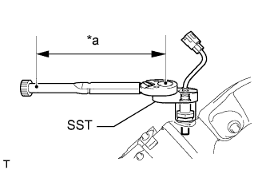
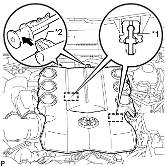

ВЫПУСКНОЙ КОЛЛЕКТОР > УСТАНОВКА |
| 1. УСТАНОВИТЕ ДАТЧИК СОСТАВА ТОПЛИВОВОЗДУШНОЙ СМЕСИ (датчик 2 ряда 1) |
 |
При помощи SST установите датчик.
| *a | Длина рычага |
| 2. УСТАНОВИТЕ ЛЕВЫЙ ВЫПУСКНОЙ КОЛЛЕКТОР В СБОРЕ |
 |
Установите новую прокладку на головку блока цилиндров.
| *1 | Выступание |
 | Передняя сторона |
Временно установите коллектор и закрепите его 6 новыми гайками.
Затяните 6 гаек в последовательности, показанной на рисунке.
| *1 | Для моделей с системой дополнительной подачи воздуха в нейтрализатор | *2 | для моделей без системы дополнительной подачи воздуха в нейтрализатор |
Подсоедините разъем датчика состава топливовоздушной смеси.
| 3. УСТАНОВИТЕ ТЕПЛОЗАЩИТНЫЙ ЭКРАН ВЫПУСКНОГО КОЛЛЕКТОРА № 2 |
Установите теплозащитный экран и закрепите его 3 болтами.
| 4. УСТАНОВИТЕ ВОЗДУШНЫЙ ПАТРУБОК № 2 (для моделей со вспомогательной системой подачи воздуха в нейтрализатор) |
 |
Установите 2 новых прокладки на воздушный патрубок № 2.
| *1 | Новая прокладка |
| *2 | Воздушный патрубок № 2 |
Установите воздушный патрубок № 2 и закрепите его 2 болтами и 2 гайками.
| 5. УСТАНОВИТЕ ОПОРУ КОЛЛЕКТОРА |
Установите опору коллектора и закрепите ее 3 болтами.
| 6. УСТАНОВИТЕ ДАТЧИК СОСТАВА ТОПЛИВОВОЗДУШНОЙ СМЕСИ (датчик 1 ряда 1) |
|  |
При помощи SST установите датчик.
| *a | Длина рычага |
| 7. УСТАНОВИТЕ ПРАВЫЙ ВЫПУСКНОЙ КОЛЛЕКТОР В СБОРЕ |
Установите новую прокладку на головку блока цилиндров.
| *1 | Выступы |
| Передняя сторона |
Временно установите коллектор и закрепите его 6 новыми гайками.
Затяните 6 гаек в последовательности, показанной на рисунке.
| *1 | Для моделей с системой дополнительной подачи воздуха в нейтрализатор | *2 | для моделей без системы дополнительной подачи воздуха в нейтрализатор |
Подсоедините разъем датчика состава топливовоздушной смеси.
| 8. УСТАНОВИТЕ ТЕПЛОЗАЩИТНЫЙ ЭКРАН ВЫПУСКНОГО КОЛЛЕКТОРА № 1 |
Установите теплозащитный экран и закрепите его 3 болтами.
| 9. ПОДСОЕДИНИТЕ ПРОМЕЖУТОЧНЫЙ ВАЛ № 2 РУЛЕВОГО УПРАВЛЕНИЯ В СБОРЕ (для моделей с правосторонним рулевым управлением) |
Для моделей с наклонной телескопической рулевой колонкой с ручным приводом:
Подсоедините промежуточный вал № 2 рулевого управления (Нажмите здесь).
Для моделей с наклонной телескопической рулевой колонкой с электроприводом:
Подсоедините промежуточный вал № 2 рулевого управления (Нажмите здесь).
| 10. УСТАНОВИТЕ ВОЗДУШНЫЙ ПАТРУБОК (для моделей со вспомогательной системой подачи воздуха в нейтрализатор) |
 |
Установите 2 новых прокладки на воздушный патрубок.
| *1 | Новая прокладка |
| *2 | Воздушная трубка |
Установите воздушный патрубок и закрепите его 2 болтами и 2 гайками.
| 11. УСТАНОВИТЕ ОПОРУ КОЛЛЕКТОРА № 2 |
Установите опору коллектора и закрепите ее 3 болтами.
| 12. УСТАНОВИТЕ ПРИЕМНУЮ ТРУБУ В СБОРЕ |
Установите приемную трубу (Нажмите здесь).
| 13. УСТАНОВИТЕ КОРПУС ВОЗДУШНОГО ФИЛЬТРА В СБОРЕ |
Установите корпус воздушного фильтра и закрепите его 3 болтами.
Закрепите зажим жгута проводов.
Установите фильтрующий элемент воздушного фильтра.
| 14. УСТАНОВИТЕ ШЛАНГ И КРЫШКУ ВОЗДУШНОГО ФИЛЬТРА |
 |
Установите крышку и шланг воздушного фильтра.
| *a | Верх |
| *b | Передняя сторона |
| *c | Справа |
| *d | Совместите вырез шланга с выступом на дроссельной заслонке |
| *e | Метка, нанесенная краской |
Установите крышку воздушного фильтра со шлангом и закрепите ее болтом и 4 откидными защелками.
Затяните хомут.
Введите в зацепление 4 зажима и подсоедините вентиляционный шланг, вакуумный шланг и разъем датчика массового расхода воздуха.
| 15. УСТАНОВИТЕ ДЕКОРАТИВНУЮ КРЫШКУ V-ОБРАЗНОГО ДВИГАТЕЛЯ |
|  |
Совместите 2 крюка крышки V-образного двигателя с кронштейном. Затем совместите 2 уплотнительных шайбы декоративной крышки V-образного двигателя с 2 штифтами и нажмите на декоративную крышку V-образного двигателя, чтобы закрепить штифты.
| *1 | Штифт |
| *2 | Крюк |
| 16. УСТАНОВИТЕ ВЕРХНЕЕ УПЛОТНЕНИЕ КРОНШТЕЙНА РАДИАТОРА |
Установите верхнее уплотнение кронштейна радиатора и закрепите его 13 фиксаторами.
| 17. ПРОВЕРЬТЕ, НЕТ ЛИ УТЕЧЕК ОТРАБОТАВШИХ ГАЗОВ |
| 18. УСТАНОВИТЕ УПЛОТНЕНИЕ ФАРТУКА ЛЕВОГО ПЕРЕДНЕГО КРЫЛА |
Для моделей с KDSS:
Установите уплотнение фартука и закрепите его 7 фиксаторами.
Для моделей без KDSS:
Установите уплотнение фартука и закрепите его 4 фиксаторами.
| 19. УСТАНОВИТЕ УПЛОТНЕНИЕ ФАРТУКА ПРАВОГО ПЕРЕДНЕГО КРЫЛА |
Установите уплотнение фартука и закрепите его 5 фиксаторами.
| 20. УСТАНОВИТЕ УПЛОТНЕНИЕ № 1 МЕЖДУ ФАРТУКОМ ЛЕВОГО ПЕРЕДНЕГО КРЫЛА И РАМОЙ |
Установите уплотнение рамы и закрепите его 5 фиксаторами.
| 21. УСТАНОВИТЕ УПЛОТНЕНИЕ № 1 МЕЖДУ ФАРТУКОМ ПРАВОГО ПЕРЕДНЕГО КРЫЛА И РАМОЙ |
Установите уплотнение рамы и закрепите его 5 фиксаторами.